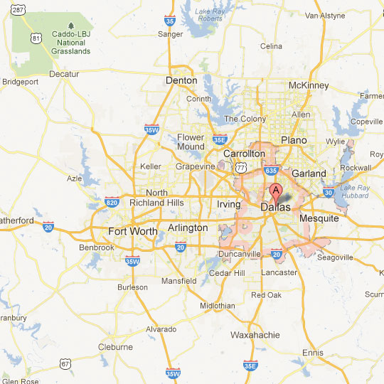
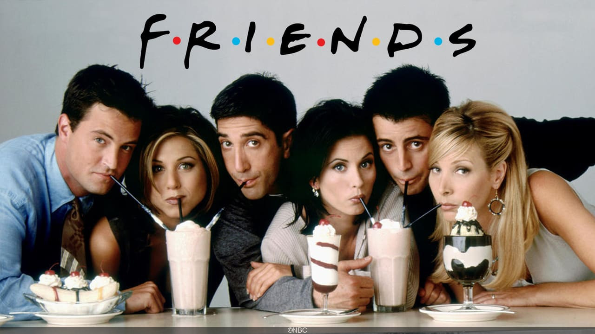

ILONA DELONG <3
I am a first year student at ESSEC business school in the BBA anglophone track. I am currently 18 years old and looking forward to enjoying life to the max !
My school !!A bit more about me!
I was born in the USA, in Dallas, Texas. I lived there for only two years (which still gave me the american passport ;) ) I then lived one year in London before moving to Paris. I was put in a bilingual school to make me keep speaking English. I also started learning Spanish in middle school, and have continued forever since. I tried to learn chinese then too, but I can barely remember some of it today. I started learning portugese this year. I therefore hope that I will be able to travel in lots of new countries to put my learnings to use.
My interests!
I love wtaching TV shows, once I plunge into these series you can't stop me from watching them !
Travels


I have traveled a lot in my life, I've been on almost every continent (only Oceania left) ! And I plan on continuing to travel the world< !!